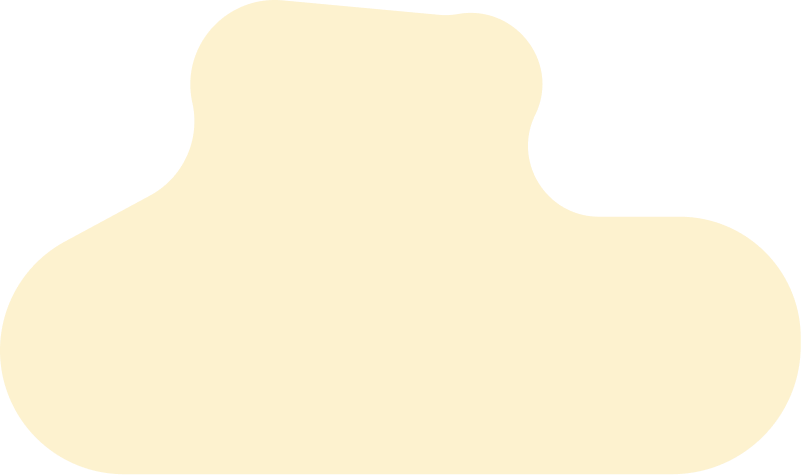
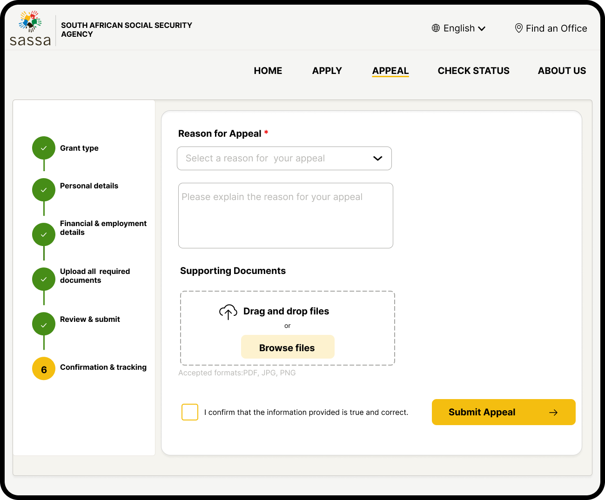

SASSA WEBSITE
REDESIGN
Making social grant services simpler, faster and more accessible for South Africans


ROLE
UX/UI DESIGNER
TIMELINE
2 MONTHS
TOOLS
FIGMA, FIGJAM
PROJECT TYPE
UX/UI DESIGN
01 About Project
This project focuses on redesigning the SASSA website to improve usability, simplify navigation, and streamline essential servuces. The goal is to create a more user friendly experience that helps South Africans access grant related services with ease.
02 Problem Statement
The current SASSA website is difficult to navigate, poorly optimized for mobile devices and lack accessiblity features. As a result, many users struglles to access essential grant services quickly and confidently.
03 Goals
Improve usability
Simplify Navigation
Faster access
Independent usage
04 Design Process
A user-centred approach was followed to ensure the redesign is intuitive, accessible and aligned to user needs
Research
Conducted interviews, surveys,user research, and analysed reviews to understand under needs
Ideation
Explored ways to improve navigation and brainstormed solutions
User Flow
Created user flows to map journery and simplify task completion
Wireframes
Developed low-fidelity wireframes to establish layout and structure
Hi- fidility Designs
Designed polished interfaces focused on clarity, accesssiblity and trust
Testing
Gathered feedback and refined designs through usability testing
05 User research summary
Methods used
- Online surveys
- user interviews
- Usability testing
Key Findings
Users struggles with navigation, complex forms, and accessing important quickly
Particpants
15 participants from various age groups, background and provinces across South Africa
06 User Personas

NOMPUMELO RADEBE
Age : 23
Occupation : Unemployed
Location: Standerton, Mpumalanga
Background : High school graduate, living with her sister
Goals
Submit an appeal after her SRD application was rejected
Fustrations
She feels confused and unfairly rejected due to "income detected".
A misunderstanding based on family support

ANDILE MAVIMBELA
Age : 35
Occupation : Retrenched
Location: Khayelitsha, Western Cape
Background : single father, recently laid off
Goals
Track and manage his SRD application
Fustrations
The website is slow, often taakes too long to load. unclear messages make it difficult to understand what isz, can't track appeal progress.

MENZI KHUMALO
Age : 61
Occupation : Retired
Location: Kwamhlanga, Kwazulu Natal
Background : Pensioner who only speaks Isizulu, uses a basic feature phone
Goals
Check his SASSA pension status independently
Fustrations
He struggles with English, and does not understand the interface, depends on family to help
07 User Reviews

"I don’t even have a job. Why was I rejected? I don’t understand what they mean by "source of income identified."

“I applied for the SRD grant, but once you’ve submitted, it feels like the system just leaves you in the dark.There should be a better way to know what’s happening. Right now, I just feel forgotten.”

“I just wanted to apply for the Child Support Grant for my kids, but the process felt like it was made to confuse me.”
“I feel left out. The government should speak to us in our language, not just online but in a way we can use.”
08 Wireframes
.png)
.png)
.png)
.png)
09 Final UI Showcase
The redesigned website provides a cleaner, more accessible experiences for South Africans to access grant services. It simplifies key tasks such as applying for social grant, checking application status and submitting appeals
Apply for grant
.png)
Appeal application

Employment details
.png)
Check status
.png)
10 Reflection
This redesigned focuces on improving accessiblity, navigation, and transparency within the SASSA digital expereince. By addressing user pain points identified during the research process, the final solution provides a simpler and more intuitive way for user to apply for grants, track applications and submit appeals.